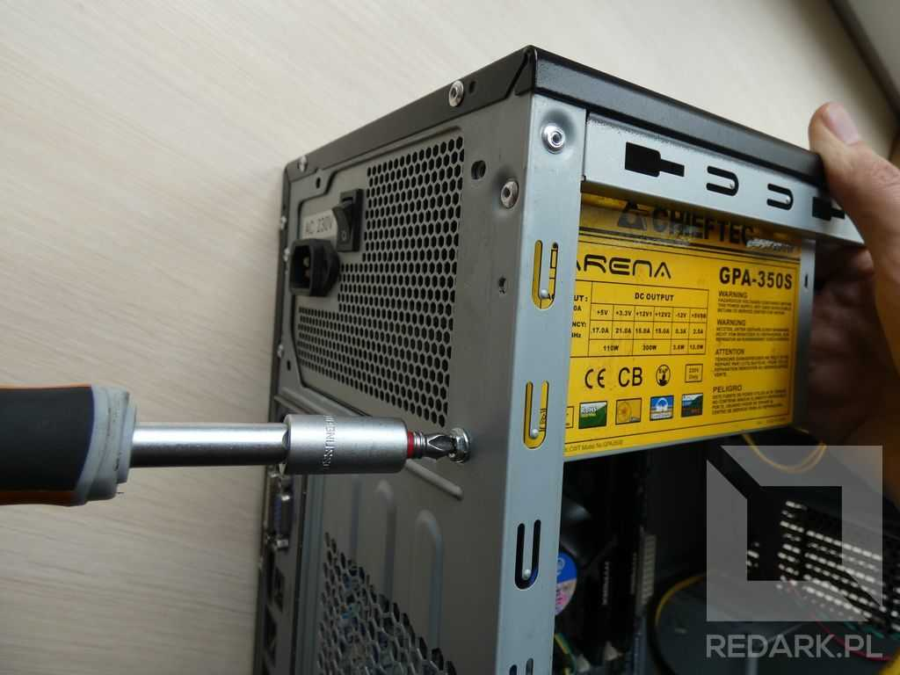
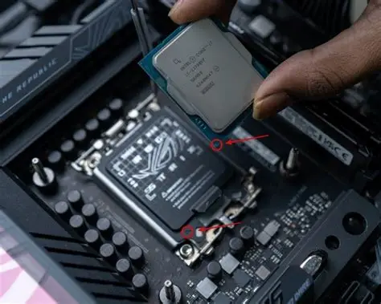

INSTRUKCJA
SKŁADANIA PC
01. Instalacja Zasilacza (PSU)
W większości nowoczesnych obudów zasilacz montuje się na dole, wentylatorem skierowanym w dół. Jeśli zasilacz jest modułowy, podłącz tylko niezbędne kable (płyta główna, CPU, GPU) przed włożeniem go do środka.

02. Instalacja Procesora
To najbardziej delikatny moment. Podnieś dźwignię gniazda. Dopasuj „złoty trójkąt” na rogu procesora do oznaczenia na płycie głównej. Delikatnie opuść procesor – nie używaj siły!

03. Dysk SSD M.2
Włóż dysk M.2 do gniazda pod kątem około 30 stopni, a następnie dociśnij go i przykręć małą śrubką lub zabezpiecz zatrzaskiem. Jeśli płyta ma radiator, załóż go z powrotem.
04. Pamięć Operacyjna (RAM)
Otwórz zatrzaski gniazd RAM. Włóż kości (zazwyczaj do slotów 2 i 4 dla Dual Channel). Dociśnij, aż usłyszysz wyraźne kliknięcie z obu stron.
05. Płyta Główna w Obudowie
Upewnij się, że dystanse w obudowie są na właściwych miejscach. Włóż maskownicę portów (jeśli nie jest zintegrowana) i ostrożnie przykręć płytę główną.
06. Karta Graficzna (GPU)
Wyłam odpowiednie śledzie w obudowie. Włóż kartę do najwyższego slotu PCIe x16 i dociśnij do kliknięcia. Nie zapomnij o podłączeniu kabli zasilających PCIe!
💡 Porada: Po złożeniu wszystkiego sprawdź dwa razy wszystkie połączenia kabli przed pierwszym włączeniem zasilania.